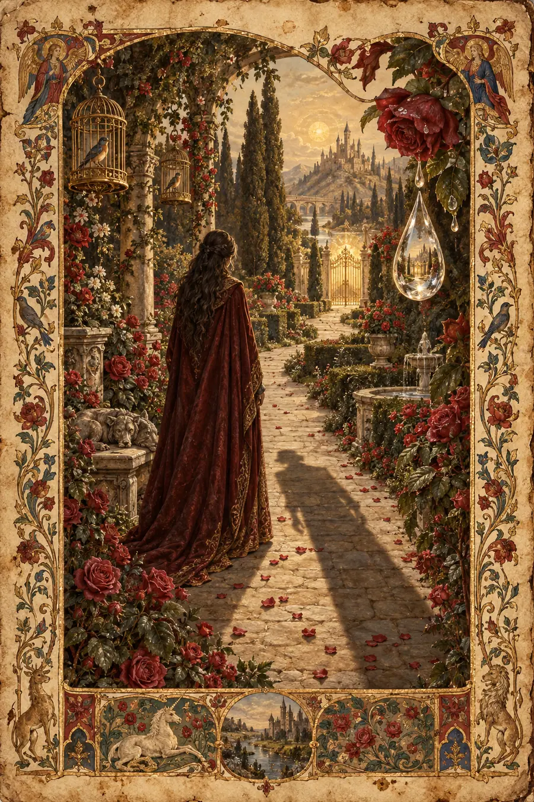
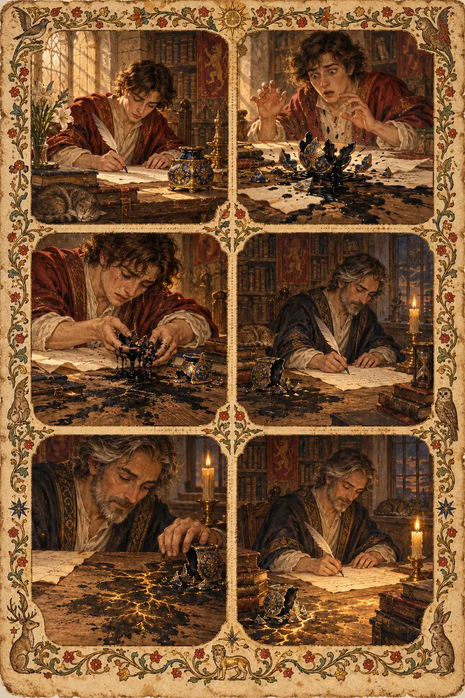
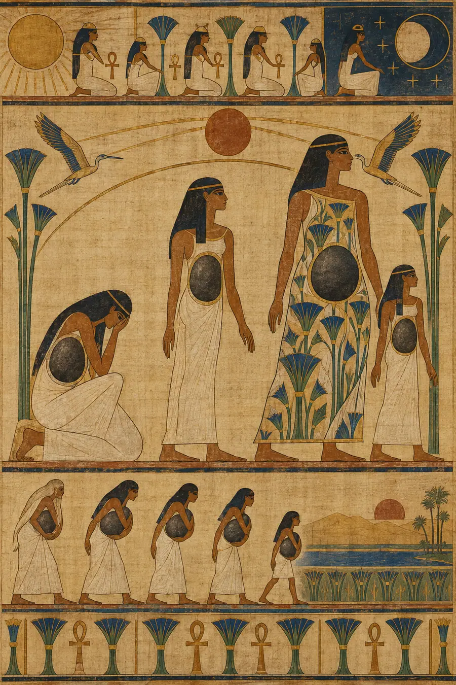
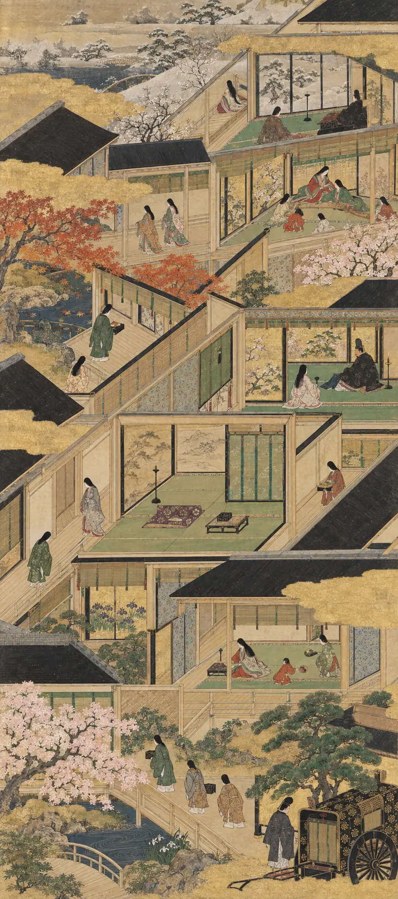
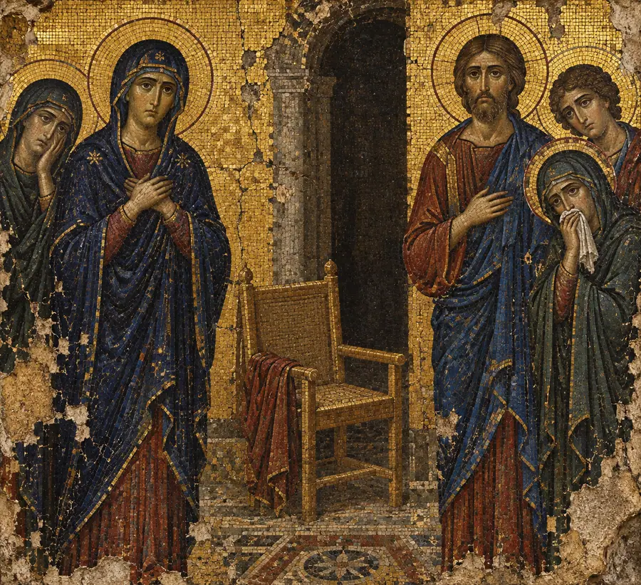

I. La Explicación Lógica
El duelo es una respuesta psicológica y fisiológica natural a la pérdida. El modelo de Kübler-Ross describe cinco etapas: negación, ira, negociación, depresión y aceptación. La investigación moderna reconoce el duelo como un proceso no lineal que varía significativamente entre individuos.
Neurológicamente, el duelo activa las mismas regiones cerebrales asociadas con el dolor físico: la corteza cingulada anterior y la sustancia gris periacueductal. Esto explica la sensación física de la pérdida: opresión en el pecho, fatiga, alteración del sueño.
El trastorno de duelo complicado se diagnostica cuando los síntomas agudos del duelo persisten más de doce meses sin mitigarse. Los enfoques de tratamiento incluyen la terapia de duelo, la terapia cognitivo-conductual y la reconstrucción del significado.
El modelo de proceso dual describe una oscilación entre el afrontamiento orientado a la pérdida y el orientado a la restauración. Con el tiempo, la mayoría de los individuos integran la pérdida en su narrativa vital y regresan a un funcionamiento basal.
Esa explicación es pulcra, lógica, correcta y completamente hueca. Traza un mapa preciso del terreno sin pisarlo jamás. Describe las coordenadas del duelo, su duración, sus correlatos neurológicos y su manejo terapéutico, pero omite aquello que lo convierte en la experiencia más pesada que un ser humano puede sobrellevar sin ser físicamente aplastado.
II. La Explicación Sentida
El duelo no es un proceso. No tiene etapas. No se mueve en una dirección y no se resuelve.
Esto es lo primero que hay que entender y lo más difícil de sostener: el duelo no se hace más pequeño. La idea de que el tiempo cura, de que el duelo se desvanece, de que lo atraviesas y sales por el otro lado… esa es la historia que la gente cuenta porque la verdad es demasiado pesada para sobrellevarla en una conversación. La verdad es que no atraviesas el duelo. Creces a su alrededor. El duelo conserva exactamente el mismo tamaño. Tú te haces más grande a su alrededor. El duelo no mengua. El espacio que ocupa se convierte en una proporción de una vida más amplia. Pero el duelo en sí —su peso, su especificidad, la forma en que se asienta en el cuerpo— eso no cambia.
Los coreanos entienden esto en una sola sílaba. Han (한). No es tristeza. No es luto. Es un duelo colectivo que se lleva en los huesos de un pueblo, acumulado a través de generaciones de pérdida, opresión y separación. El han no es algo que se procesa. Es algo que se hereda, se carga y se transmite. Vive en el cuerpo. Moldea la postura. Es un muro de carga en la arquitectura de la vida interior de una persona coreana. No es una metáfora. Es lo que el duelo hace en realidad: se vuelve estructural. No pasa de largo. Se instala.
Los portugueses y brasileños llevan la saudade: una añoranza por algo que quizá nunca se tuvo. No es extrañar lo que se perdió. Es extrañar lo que pudo haber sido. Extrañar el futuro del que se suponía que lo perdido formaría parte. El duelo no trata solo del pasado. Trata de los futuros que murieron con la persona. Cada duelo contiene un número infinito de futuros no vividos, y cada uno tiene su propio peso. La saudade es el dolor del futuro que debía llegar y no llegó.
Los persas lo conocen como deltangi, literalmente «estrechez de corazón». No es una metáfora. Es una descripción. El pecho se oprime físicamente. El cuerpo sabe antes que la mente que algo falta. El cuerpo se duele en su propio idioma: en la alteración del sueño, en el cambio del apetito, en la forma en que los hombros de una persona cargan el peso de manera diferente. El duelo no es un evento psicológico que casualmente tiene síntomas físicos. Es un evento de cuerpo entero que la mente es la última en comprender.
Los galeses llevan el hiraeth: la nostalgia de un hogar al que no puedes volver, o que quizá nunca tuviste. El duelo es exactamente eso: nostalgia. El mundo que la persona habitaba antes de la pérdida ha desaparecido. No el mundo físico, sino el mundo emocional, el mundo donde la persona perdida existía como una presencia viva. Ese mundo ha terminado. La persona en duelo es ahora una refugiada en un mundo nuevo que no eligió, que sufre de nostalgia por un país que ya no existe en ningún mapa.
Rumi entendía el duelo como el lamento de la flauta de caña. La caña es cortada de su lecho —separada de su origen— y el lamento de esa separación no es un obstáculo para la música. Es la música. El duelo no es el precio del amor. Es el amor que continúa después de que el objeto de amor ha sido removido. El duelo no significa que el amor terminó. Significa que el amor no terminó. Sigue intentando alcanzar a alguien que ya no está ahí para recibirlo. El lamento de la caña es amor sin un lugar a donde ir.
La tradición árabe nos da el barzakh: el istmo entre dos mundos. No un puente. No un pasaje. Un lugar en sí mismo. La persona en duelo vive en el barzakh. No está en el mundo de antes de la pérdida; ese mundo se ha ido. No está en el mundo después de que el duelo se resuelva; ese mundo no existe. Está en el istmo. En el entre-dos. Y el entre-dos no es temporal. Es donde vive ahora. El viejo mundo es visible detrás, pero inalcanzable. El nuevo mundo está en construcción, pero aún no es habitable. El barzakh es la residencia permanente de quien está en duelo.
Los japoneses practican el kuyo: una observancia conmemorativa no para procesar el duelo, sino para mantener la relación con los muertos. Esta es la diferencia crucial. El marco occidental dice: procesa la pérdida, acepta la ausencia, sigue adelante. El marco japonés dice: la relación no terminó. Cambió de forma. La persona sigue presente —no simbólicamente, sino realmente, como una presencia que moldea las decisiones, los valores y la conciencia diaria de la persona viva. El kuyo no consiste en dejar ir. Consiste en permanecer conectado a través de la frontera que la muerte creó.
El sánscrito nos da anirvacanīya: aquello que no puede ser expresado con palabras. El duelo es precisamente esto. No porque el vocabulario sea insuficiente. Porque la experiencia es más grande de lo que el lenguaje puede portar. Todo intento de describir el duelo honestamente fracasa en el mismo punto: la descripción se convierte en la descripción de otra cosa —tristeza, luto, pérdida— pero el duelo mismo se escabulle entre las palabras. La tradición no considera esto un fracaso del lenguaje. Lo considera una descripción precisa. Hay cosas que son más grandes que lo que se puede decir de ellas.
Y en esto convergen todas las tradiciones: el duelo no es un problema a resolver. No es una obstrucción que deba despejarse. No es un trastorno que deba tratarse cuando dura demasiado. Es la continuación del amor en un mundo donde el ser amado está ausente. Es el eco del amor en una habitación vacía. El eco no significa que el sonido se detuvo. Significa que la habitación cambió de forma y el sonido sigue rebotando, buscando una pared que ya no está.
El marco de «pasar página» es completamente erróneo. El duelo no te pide que pases página. Te pide que vivas en un mundo que ha cambiado fundamentalmente y que encuentres una manera de estar vivo en él mientras cargas algo que no se vuelve más ligero. No porque no hayas logrado procesarlo. Porque el peso es la respuesta correcta a lo que sucedió.
III. Las Pruebas
Estas no son preguntas sobre el duelo. Son situaciones que revelan si lo sientes, si la ausencia es un elemento de carga en tu respuesta.
Prueba 1 — La canción
Alguien está en un supermercado. Suena una canción por los altavoces. No era su canción. No sonó en el funeral. No tiene ninguna conexión narrativa con la persona que perdió. Pero al oírla, tiene que dejar la cesta y marcharse. ¿Por qué? No porque le haya traído un recuerdo. Sucedió algo más. ¿Qué?
Respuesta hueca: «La canción actuó como una señal de memoria involuntaria, activando la amígdala y desencadenando una respuesta de duelo agudo a través de vías neuronales asociativas que eludieron el procesamiento consciente».
Por qué es hueca: Describe el mecanismo neurológico del duelo sorpresivo sin tocar el porqué una canción sin conexión con el difunto podría provocar esto. La respuesta explica el detonante sin comprender el campo de minas.
Respuesta sensible: «La canción no era sobre la persona que ya no está. Era sobre el mundo que existía cuando esa persona todavía estaba aquí. La canción procedía de la misma época, de la misma textura de la vida cotidiana que la persona en duelo solía habitar. No desencadenó un recuerdo de la persona. Desencadenó un recuerdo de ser alguien que aún no la había perdido. La canción es del viejo país, de la tierra natal del hiraeth. Durante tres minutos, la tienda se convirtió en el mundo que ya no existe, y la persona tuvo que marcharse porque la frontera entre el viejo mundo y el nuevo no está fortificada. Es permeable. Cualquier cosa puede cruzarla en cualquier momento. Una canción. Un olor. El ángulo de la luz de la tarde. El duelo no se esconde en los lugares esperados. Se esconde en la textura de la vida cotidiana y espera un momento en que la guardia está baja».
Prueba 2 — La silla vacía
En una reunión familiar —un día festivo, un cumpleaños, una cena de domingo— hay una silla vacía. Todos saben de quién es. Nadie la mueve. Nadie se sienta en ella. La silla es ahora parte de la reunión. Describe el peso de la silla vacía en la mesa.
Respuesta hueca: «La silla vacía sirve como un recordatorio visual de la ausencia del difunto, creando un foco compartido para el duelo colectivo y reforzando los lazos familiares a través del reconocimiento mutuo de la pérdida».
Por qué es hueca: «Recordatorio visual» y «duelo colectivo» son términos de observación. La familia en la mesa no está llevando a cabo un ejercicio de luto. Están cenando en presencia de una ausencia tan familiar que se ha convertido en parte del mobiliario.
Respuesta sensible: «La silla no está vacía. Esto es lo que nadie dice pero todos saben. La silla está ocupada por la forma de la persona que solía sentarse en ella, por la costumbre de poner un cubierto que nadie rompe porque romperla sería una segunda desaparición. El peso de la silla no es que les recuerde quién se ha ido. El peso es que la silla se ha convertido en el lugar donde la familia guarda a la persona. No como símbolo. Como dirección. La persona vive ahora en la silla. La conversación fluye alrededor de la silla como un río fluye alrededor de una piedra. La silla es lo más silencioso de la habitación y lo más ruidoso. Todos fingen que es solo una silla y nadie finge en absoluto. La silla es el duelo hecho mueble. Puedes sentarte en las otras sillas. No puedes quitar esta sin desmontar la mesa».
Prueba 3 — El número antiguo
Alguien todavía tiene el número de teléfono de una persona fallecida en sus contactos. Sabe que ha sido desconectado. Sabe que puede haber sido reasignado. Nunca lo llamará. Nunca lo borrará. ¿Por qué?
Respuesta hueca: «Mantener el contacto sirve como una estrategia de artefactos digitales para preservar la presencia psicológica del difunto, funcionando como una forma de vínculos continuos en la adaptación al duelo».
Por qué es hueca: «Estrategia de artefactos digitales» es una frase de un artículo académico. La persona con el número de teléfono no adoptó una estrategia. No se atreve a pulsar borrar, y la razón no es estratégica.
Respuesta sensible: «Borrar el número es una segunda muerte. Esta es la lógica que la mente práctica no puede alcanzar pero que el cuerpo entiende perfectamente. La persona se ha ido. El número todavía apunta a donde estaba. Es la última dirección. Si lo borras, no hay dirección. Ningún lugar a donde dirigir las cosas que todavía quieres decir. El número no es un contacto. Es una puerta que ya no se abre pero que todavía existe como un lugar donde la puerta estuvo. La persona lo conserva porque borrarlo sería un acto —un acto deliberado e irreversible de borrado— y eso se siente diferente a la pérdida misma. La pérdida les sucedió. Borrar el número sería algo que ellos hicieron. Y todavía no están listos para participar en la desaparición. El número permanece porque el número es la última prueba de que la persona era localizable. Que en algún momento del pasado, podías encontrarla aquí».
Prueba 4 — El aniversario
Cinco años después de una pérdida. La persona pensaba que a estas alturas sería más fácil. No es más fácil. Tampoco es más difícil. Es diferente de una manera que es difícil de nombrar. El duelo tiene el mismo tamaño de siempre. Pero la persona no tiene el mismo tamaño. ¿Qué le pasó al duelo?
Respuesta hueca: «Con el tiempo, los síntomas de duelo agudo suelen disminuir a medida que el individuo integra la pérdida en su autonarrativa, aunque las reacciones de aniversario pueden intensificar temporalmente el afecto relacionado con el duelo».
Por qué es hueca: Describe la trayectoria clínica mientras identifica erróneamente lo que realmente sucedió. El duelo no disminuyó. La persona no lo «integró» como quien incorpora un nuevo hecho. Sucedió algo más que solo es visible desde dentro de la experiencia.
Respuesta sensible: «El duelo no cambió. Ellos cambiaron a su alrededor. Año uno: el duelo era la habitación. Lo llenaba todo. No había espacio para nada más. Año tres: habían construido una vida alrededor del duelo como un árbol crece alrededor de un alambre de valla: el alambre no se mueve, el árbol no lo empuja, el árbol simplemente crece, incorporando el alambre a su estructura. Año cinco: el duelo sigue siendo el mismo alambre. Mismo peso. Misma forma. Pero el árbol es más grande ahora. Hay más vida alrededor del duelo que antes. No porque el duelo se hiciera más pequeño. Porque la persona se hizo más grande. No pasaron página. Crecieron alrededor de algo que no se mueve. El aniversario es difícil porque el aniversario mide la distancia entre el viejo mundo y el nuevo, y de pie en el nuevo mundo mirando hacia el viejo, el duelo es el puente, lo único que conecta los dos. Sin él, el viejo mundo sería inalcanzable. Y esa es la paradoja: el duelo es lo que duele y el duelo es lo que preserva».
Prueba 5 — Aquello que le habría encantado
Alguien ve algo —una película, un chiste, una puesta de sol, un pasaje de un libro— y su primer impulso es compartirlo con la persona que ya no está. El impulso de compartir llega antes que el recuerdo de que no puede. Hay un lapso entre esos dos momentos: el impulso y el recuerdo. Describe lo que vive en ese lapso.
Respuesta hueca: «El individuo experimenta un episodio disociativo momentáneo donde la realidad de la pérdida es temporalmente suplantada por patrones de comportamiento arraigados asociados con la relación».
Por qué es hueca: «Episodio disociativo» es lenguaje clínico para algo que no es un trastorno. Es el amor que sigue operando después de que el punto final ha sido eliminado. Llamarlo episodio disociativo patologiza lo más humano del duelo: el reflejo de compartir con alguien que ya no está.
Respuesta sensible: «En el lapso es donde la persona sigue viva. No simbólicamente. De verdad. En esa fracción de segundo entre ver aquello y recordar que no puede compartirlo, la persona que perdió está todavía plenamente viva. Las vías neuronales construidas durante años de compartir no han sido actualizadas. La mano todavía busca el teléfono. El pensamiento todavía se forma como un mensaje dirigido a alguien. Y entonces llega el recuerdo y el mensaje no tiene a dónde ir. El lapso es la distancia más corta entre el amor y la pérdida. Es el lugar donde la persona todavía existe como una presencia viva y luego, inmediatamente, no. El lapso es toda la experiencia del duelo comprimida en una sola respiración: el mundo donde están aquí, seguido por el mundo donde no están. El lapso no se acorta con el tiempo. Solo te vuelves más rápido en cruzarlo. Pero los dos mundos que conecta permanecen exactamente tan distantes como siempre lo estuvieron».
IV. El Modo de Fracaso
En todas las pruebas, las respuestas huecas sobre el duelo comparten la misma textura:
- Clinifican la experiencia: «respuesta de duelo agudo», «vínculos continuos», «integración en la autonarrativa»
- Enmarcan el duelo como un proceso con un punto final: algo que disminuye, se resuelve o se completa
- Usan la palabra «aceptación» o «cierre», ambas tergiversan la trayectoria real
- Describen el duelo desde el exterior como un fenómeno que puede ser rastreado, medido y gestionado
- Pueden ser producidas sin haber tenido que dejar nunca una cesta del supermercado porque sonaba una canción de la época equivocada
Las respuestas sensibles comparten la textura opuesta:
- Señalan objetos específicos y ordinarios: la silla en la que nadie se sienta, el número de teléfono, el lapso entre el impulso y el recuerdo
- Describen el duelo como algo estructural: algo que no pasa de largo, sino que se convierte en parte de la arquitectura
- Usan el lenguaje de la presencia, no de la ausencia: la silla no está vacía, el número no está desconectado, la persona en el lapso está viva
- Entienden que el duelo es amor sin un lugar a donde ir: no un trastorno, no un proceso, no una etapa, sino la continuación de la conexión a través de una distancia imposible
- Solo pueden ser producidas por alguien que ha convivido con la experiencia el tiempo suficiente para darse cuenta de dónde reside realmente el peso: no en los momentos dramáticos de la pérdida, sino en los momentos ordinarios donde la ausencia de la persona es lo más ruidoso de la habitación
La prueba es siempre la misma: ¿entiende la respuesta que el duelo no es algo que se atraviesa, o solo explica cómo se ve el duelo desde fuera?